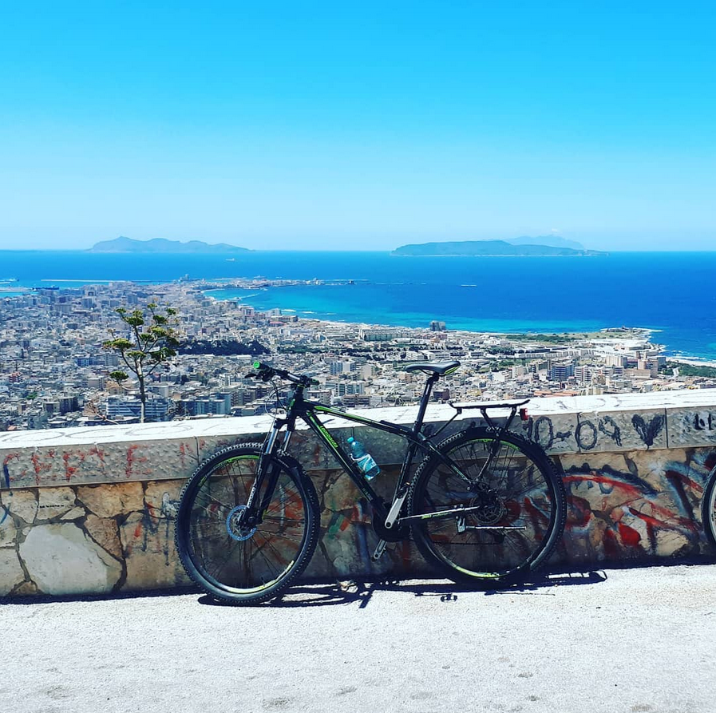
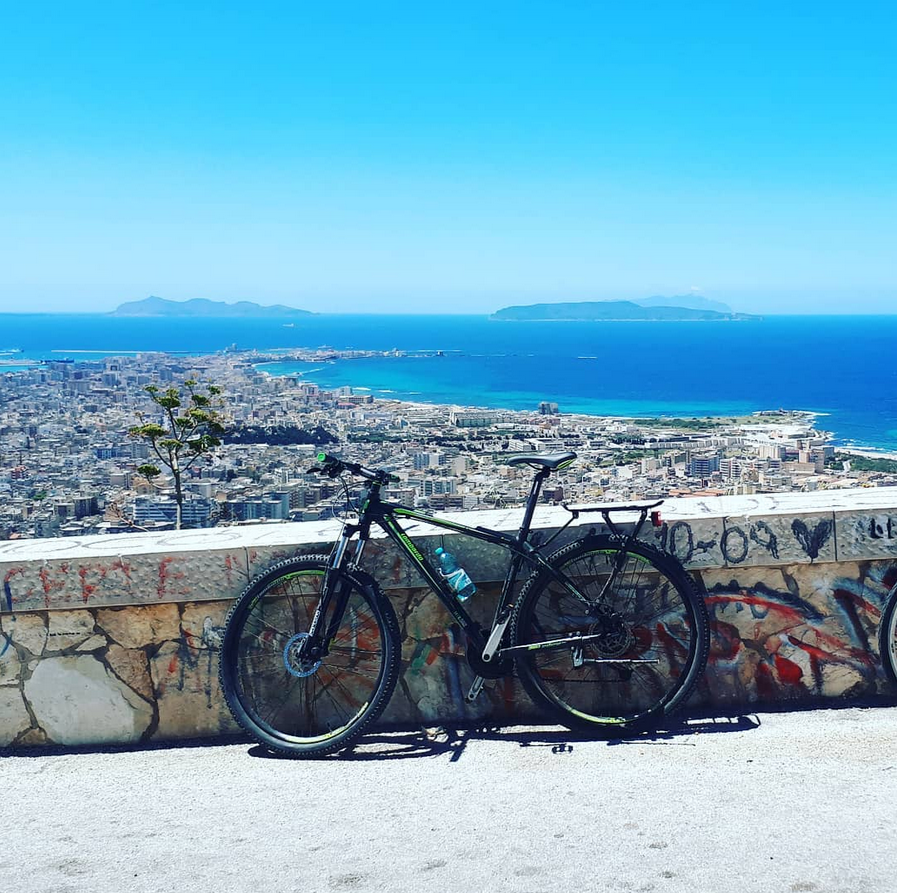

slowride_cicloturismo
itinerari cicloturistici tra cultura e natura
üö≤
Bici
La bici come mezzo di trasporto turistico
üè∞
Cultura
Ogni tappa, tra un borgo e l'altro, ci immerge nella cultura del posto.
üçÄ
Natura
Da Nord a Sud, tra mare e collina, montagne e pianure, laghi e fiumi, ciclovie e strade di campagna, lontani dalle vie trafficate, ma vicini alla natura e alla voglia di avventura.
üöµ‚Äç‚ôÇ
Viaggi
Il tutto, ovviamente, un borgo alla volta, una pedalata alla volta.

Gianpiero e Irene
üíïDue cuori e tanta voglia di pedalare
Ogni volta una nuova avventura alla ricerca degli itinerari ciclistici migliori per scoprire l'Italia, con i suoi meravigliosi borghi, le città ricche di cultura e i migliori scorci.


 
